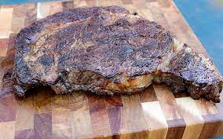

Steak

Ingredients
- Steak of Choice
- Salt
- Pepper
- Butter
Instructions
- Place butter in pan and melt. Get it to ~500F.
- Add steak, and immedietely salt and pepper. Start timer at the same time.
- After 60 seconds, flip steak.
- Salt and pepper other side now. Add 2-3x as much salt and pepper on this side as the other, almost creating a crust.
- After 60 seconds, flip again. From here on, cook per side based on preference. For medium on a 1" thick steak, assume 3 minutes additional per side.